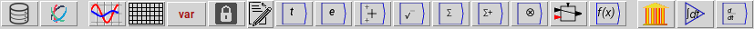
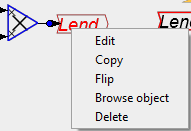

Next: Creating an equation
Up: Working with Ravel
Previous: Components in Ravel
Contents
There are five ways to insert a component onto the Canvas:
- Click on the desired Icon on the Icon Palette, drag the block onto
the Canvas and click the mouse where you want to insert it

- Choose Insert from the menu and select the desired block there
- Right-click on an existing block and choose copy. Then place the copy
where you want it on the palette.

- Variables can be inserted by typing the variable name on the canvas,
and constants can be entered simply by typing the number on the canvas.
Similarly, operations can be inserted by typing the operator name
(eg
sin, or *). Notes can be inserted by starting
the note with a # character.
- Variables can also be picked from the Variable Browser
and placed on the canvas.